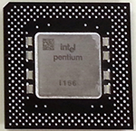

Virtual Computer Tour
Stop #3: Central Processing Unit
The central processing unit (also known as the CPU or the processor) is the brain of the computer. It is responsible for following the instructions provided by the software you are using to process the data you are entering and manipulating.

While the CPU is a separate component from the motherboard, they are usually designed to work with each other. This means that it isn't usually possible to change the CPU on an existing computer, so it is important that you choose a computer that has a CPU that will do what you need it to do.
While RAM and storage are measured in bytes, we normally measure a CPU using the unit hertz (abbreviated Hz). A hertz is a single cycle per second. In the case of a CPU, a cycle includes retrieving data from RAM, processing the data according to the software instructions, then putting the processed data back in RAM in case it is needed later. Modern CPUs typically run between 1.5 GHz (gigahertz) and 3 GHz. Remember that the prefix giga is an abbreviation for one billion, so the CPU in your computer is likely processing data in at least a billion cycles per second!
Many modern CPU chips also contain two or four cores. A core is an independent processor on the chip, so a dual-core processor has two processors running simultaneously. While this doesn't really double the speed of the processor, it does make it run much faster than if there were only one core on the CPU.
Click the button below to move to our last stop: Storage!